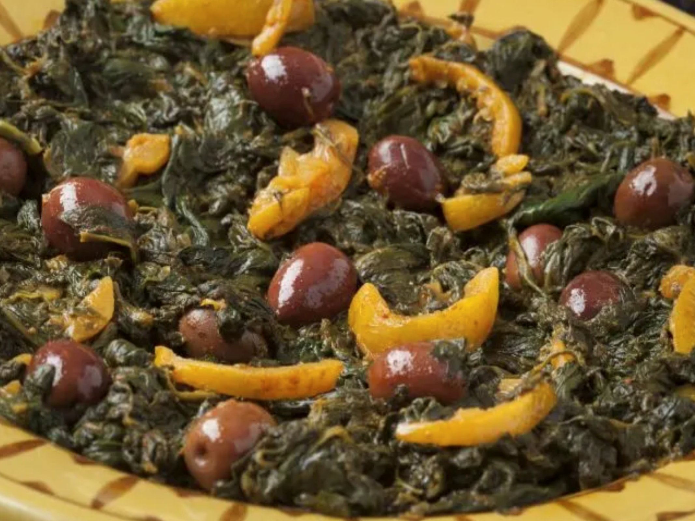

Moroccan Mallow Salad Recipe
Ingredients
- 1/2 pound mallow leaves and stems - (about 8 cups, packed)
- 1/2 cup olive oil
- 1/2 cup chopped parsley and/or cilantro - (I use a mix)
- 4 cloves garlic, pressed or finely chopped - or more to taste
- 1 1/2 teaspoons paprika
- 1 1/2 teaspoons cumin
- 1/4 teaspoon salt - or more to taste
- 1/4 teaspoon cayenne pepper - or to taste (optional)
- 2 tablespoons lemon juice - or to taste
- 1 preserved lemon pulp - chopped
- preserved lemon rind - for garnish
- 1 handful red olives - for garnish
Instructions
Wash, Chop and Steam the Mallow
In a large bowl or sink full of water, wash the mallow thoroughly. Rinse and drain well. Chop the leaves and stems and place into a steamer basket set over simmering water. It's okay if the greens are heaped above the rim.
Steam the mallow for 15-20 minutes or until the mallow is tender. It will greatly reduce in bulk and turn darker in color.
½ pound mallow leaves and stems queeze or press out any extra water from the steamed mallow. You cand do this directly in the steamer basket using a wooden spoon or spatula to press the mallow against the sides of the basket.
Saute the Steamed Mallow
While the mallow is steaming, place the olive oil, garlic, parsley, cilantro, and spices in a large skillet. Saute over medium or medium-low for several minutes, until the herbs are wilted and the garlic is fragrant. Be careful not to burn the garlic. Remove from the heat until the mallow is ready.
½ cup olive oil, ½ cup chopped parsley and/or cilantro, 4 cloves garlic, pressed or finely chopped, 1½ teaspoons paprika, 1½ teaspoons cumin, ¼ teaspoon salt, ¼ teaspoon cayenne pepper
Add the mallow to the skillet along with the chopped preserved lemon pulp, and lemon juice. Saute over medium heat for 5 to 10 minutes, until the flavors are well combined.
2 tablespoons lemon juice, 1 preserved lemon pulp Taste and adjust seasoning or lemon juice. Serve warm or at room temperature, garnishing with the whole olives and preserved lemon rind.